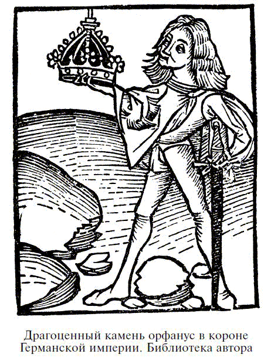

О злых и добрых камнях
 ОПАЛ
ОПАЛ
Мать
Приди ко мне и возложи амулет на свое чело,
И добрые духи дозволят, чтобы никогда его
Не избороздили даже следы морщин.
Дочь
Твоя любовь, мать моя, есть щит значительно
Лучший для твоей дочери, чем любой амулет.
И все же это замечательный самоцвет,[63]
имеющий дар светлых небес,
Так как в его глубине сияет
изменчивый свет радуги
Или подобие слабой молнии в летний вечер.
Мать
Когда любовь наполняет сердце матери,
На тебя всегда смотрят ее любящие глаза.[64]
Не может быть никакого сомнения в том, что большая часть современных суеверий относительно несчастливых свойств опала обязана своим происхождением невнимательному чтению замечательного романа сэра Вальтера Скотта «Анна из Гейерштейна». В нем рассказывается о леди Гермионе, заколдованной принцессе, которая появилась неизвестно откуда и всегда носила в волосах ослепительный опал. Но ничто не указывает на то, что Скотт действительно считал опал несчастливым камнем. Самоцвет леди Гермионы был заколдованным камнем, как и его хозяйка. Он возник в результате колдовства, и его особенности целиком зависели от его таинственного характера, который в равной степени можно приписать бриллианту, рубину или сапфиру. Жизнь камня была связана с жизнью Гермионы; он сверкал, когда она была весела, извергал красные лучи, когда она сердилась, а когда на него упали несколько капелек святой воды, его блеск погас. Гермиона упала в обморок, ее унесли в спальню, а на следующий день на ее постели нашли только небольшую кучку пепла. Колдовство было снято, чары рассеялись. Выбор опала, а не другого драгоценного камня может быть обусловлен его удивительной игрой света и чувствительностью к влаге. Поэтому полностью оправдано наше возвращение к старому поверью о многочисленных свойствах опала: ведь стоит только вспомнить, что этот камень более хрупок, чем многие остальные, и с ним надо более бережно обращаться, более бережно хранить.
Опал, самоцвет октября, напоминает своей разнообразной игрой цвета яркий октябрьский день в деревне, когда земля и небо соперничают друг с другом, а глаз ослеплен безумным разнообразием красок.
Плиний редко дает информацию о каких-то конкретных драгоценностях, почти всегда ограничиваясь описанием их формы и цвета, и эти данные касаются того, что в народе считается их талисманной и целебной силой. Однако об опале он пишет следующее: «Сегодня существует самоцвет такого рода, из-за которого сенатор Нонний был объявлен Антонием вне закона. Спасаясь бегством, он из всего своего имущества взял с собой одно кольцо, которое, можно с уверенностью сказать, было оценено в 2 000 000 сестерций». Камень был «величиной с орех».
Этот «опал Нонния» был бы знаменитым историческим опалом, если бы мы были уверены, что это действительно был камень, который мы сейчас называем опалом. Поскольку основной европейский источник поступления опала в классические времена, похоже, не был доступен римлянам и поскольку опалы не находили там, откуда, согласно Плинию, он ведет свое происхождение, мы почти вынуждены сделать вывод, что, красноречиво описывая опал, он имел в виду какой-то другой камень. И все же, несмотря на все это, Плиний так хорошо описывает красоты прекрасного опала, что трудно определить, какой другой камень он мог иметь в виду. Ведь об опалах можно смело сказать, что «огонь в них мягче, чем в карбункуле, в них есть блестящий пурпур аметиста; морская зелень изумруда – весь блеск в невероятном сочетании. Некоторые опалы своим сияющим великолепием соперничают с красками художников, другие – с пламенем горящей серы или огнем, оживленным добавкой масла». Возможно, некоторые сверкающие разновидности переливчатого кварца ириса, имеющего внутренние трещины, могут восхитить тех, кто никогда не видел опала, так как эти трещины создают сияние всех цветов радуги по всему объему прозрачного кристалла. Эти кварцевые кристаллы часто обрабатывались в виде кабошона и считались особыми драгоценными украшениями. Тот факт, что Плиний мог хвалить стеклянные имитации oпала и утверждать, что этот камень успешнее поддается имитации, чем любой другой, является почти решающим аргументом против идентификации его с опалом, потому что хорошо известно, что ни один камень не имитируется труднее, чем опал.
Примерно в середине XVIII века один крестьянин нашел в старых развалинах возле Александрии в Египте сверкающий драгоценный камень, вставленный в кольцо. Он был размером с орех, и, говорят, это был опал, отшлифованный в форме кабошона. Если верить этим сведениям, его, в конце концов, привезли в Константинополь, где оценили в «несколько тысяч дукатов». Описание этого самоцвета, его явная старина и высокая цена, которую за него назначили, многих склоняют к выводу, что это и был знаменитый «опал Нонния». Конечно, это всего лишь романтическая фантазия. Также совершенно очевидно, что опал вряд ли сохранил бы игру цвета или плотность в течение двадцати веков, потому что большинство опалов теряет влагу – медленно, конечно, но верно – и за гораздо меньший срок. Даже самые прекрасные венгерские опалы за столетие, а то и быстрее, утрачивали игру и цвет, а некоторые прозрачные мексиканские опалы теряют цвет и покрываются трещинами за несколько лет.

В Эдде[65] рассказывается о священном камне, называемом «ярка-камень», который искусный кузнец Волендр (скандинавский Вулкан) сотворил из детских глаз. Гримм предполагает, что это название означает круглый, молочно-белый опал. Известно, что в Средние века опал часто называли oфтальмиусом, или глазным камнем, и многие верили, что в зрачке глаза можно увидеть образ мальчика или девочки. Альберт Великий описывает под названием oрфанус камень, вставленный в императорскую корону Священной Римской империи. Считается, что этот камень – великолепный опал, и Альберт описывает его так:
«Oрфанус – это камень, находящийся в короне римского императора, и никто никогда не видел ничего подобного; именно по этой причине он называется орфанусом. У него нежный винный оттенок, напоминающий сверкание чистого белого снега, если смотреть на него сквозь бокал с ярко-красным вином. Это прозрачный камень, и существует предание, что раньше он сверкал ночью; но сейчас, в наш век, он не сверкает в темноте. Говорят, он охраняет королевскую честь».
Альберт описал глазной камень. Это название в Средние века часто давали опалу, рассказывая о его волшебной способности исцелять глазные болезни и делать своего владельца невидимым, откуда произошло еще одно его название – «покровитель воров».
В Средние века очень активно эксплуатировались опаловые рудники у Черновиц, входивших тогда в состав Венгрии. Говорят, после их открытия в XV веке на них трудилось более трех тысяч человек. В это время и много веков позже не возникало ни тени сомнения в славе опала не только как камня редкой красоты, но также как первоклассного талисмана. Известно, что девушки-блондинки ничто не ценили так высоко, как ожерелья из опала, потому что, когда они носили эти украшения, их волосы сохраняли свой прекрасный цвет. Последние суеверия, вероятно, вызваны хрупкостью этого камня и тем, что он иногда утрачивает игру цветов.
С древнейших времен пагубное влияние дурного глаза внушало ужас невежественным и суеверным душам. Некоторые верили, что название «опал», которое во времена королевы Елизаветы писалось «oфал», происходит от «офтальмос» – «глаз» или «офтальмиус» – «глазной», и поэтому глуповатое суеверие относительно того, что опал приносит несчастье, связано с верой в дурной глаз. Однако это совершенно неправильно, так как считалось, что камень, называемый старыми авторами «офтальмиусом», видимо, соответствовал «опалусу» древних и нашему опалу, имеет удивительно благотворное влияние на зрение, а если, согласно поверью, он делал владельца невидимым, то это лишь дополнительное достоинство камня.
Глазчатые агаты иногда использовались для изготовления глаз идолов. Позднее некоторые из этих камней были вынуты из статуй и покрыты резьбой с обратной стороны. В Алеппо (и везде на Востоке) существует некий тип болячек, известных под названием «алеппского прыща» или «алеппского нарыва». Нарыв зачастую появляется через много времени после заражения. Он выглядит в виде вздутия, окруженного белым кольцом. Среди местных жителей бытует поверье, будто существуют «алеппские камни», которые называют «глазчатыми агатами», исцеляющие алеппскую болячку. «Глазчатые агаты» получают путем разрезания трехслойного бледно-желтого или бледно-серого агата с белыми прожилками, благодаря которым они становятся похожи на глаз или двойной глаз. Благотворное влияние агата может быть объяснено тем, что холодный камень на какое-то время приносит облегчение.
Этот «алеппский нарыв», или «восточная болячка», так распространенная в Западной Азии, вызывается, по мнению лучших авторитетов, болезнетворным микробом Leishmania tropica, открытым Райтом в 1903 году. Каким образом этот микроб внедряется в тело человека, до сих пор не выяснено, но предполагается, что это происходит при укусе москита флеботомуса.[66]
Считалось, что глаз какого-то невидимого монстра, глаз дракона, глаз змеи обладают пагубным действием. Хорошо известно, что в Восточной Индии считают павлинье перо с глазом приносящим несчастье. Даже в наше время среди тех, кого не пугает такое первобытное суеверие, шутливое использование этого представления, например в «Дике Мертвом Глазе» Джилберта и «Нагруднике» Салливана, доказывает, что вера в дурной глаз не чужда и нам. По этой причине такие камни, как, например, кошачий глаз, тигровый глаз или «глаз Бэла», всегда вызывают некоторый странный интерес.
Одно из самых древних описаний опала на английском языке мы находим у доктора Стивена Бэтмена, жившего во времена королевы Елизаветы (ум. в 1584 г.). Хотя этот отрывок в основном является переводом средневековой энциклопедии «О свойствах вещей» Бартоломея Английского, английская версия интересна тем, что показывает представления об опале английских читателей того времени. Там, конечно, нет ни следа глупых современных суеверий относительно губительности этого прекрасного камня. Бэтмен в книге о Бартоломее Английском пишет:
«Optallio также называют oppalus, и он отличается цветом разнообразных драгоценных камней. Он встречается только в Индии (в реке Инд), и считается, что цветов у него столько же, сколько добродетелей. В „Лапидарии“ об этом Optallius говорится, что этот Optallius сохраняет и защищает глаза владельца, делая их ясными, зоркими и не знающими горя. Вместе с тем он затуманивает глаза других людей, делая их слепыми той слепотой, которая называется amentia, таким образом, что они не могут ни спрятать, ни видеть того, что находится перед их глазами. Поэтому его называют самым надежным покровителем воров».
Сравнение с опалом встречается и у Шекспира, считавшего его символом непостоянства. В «Двенадцатой ночи» шут говорит герцогу:
«Да храни тебя бог меланхолии, и да сошьет тебе портной камзол из переливчатой тафты, потому что душа твоя ни дать ни взять изменчивый опал».
Красота опала высоко ценилась в XVI веке. Кардани рассказывает, что однажды он купил опал за пятнадцать золотых крон и получил от него не меньшее удовольствие, чем от бриллианта стоимостью в пятьсот крон. Хотя суеверия во времена Кардани были скорее правилом, чем исключением, нам не известно ни одного глупого предубеждения относительно недобрых свойств опала. Только в XIX веке получили распространение неразумные и почти необъяснимые суеверия. Владение такой прекрасной вещью, как опал, безусловно, должно быть источником удовольствия, а поэтому приносить владельцу счастье.
Хотя некоторые считали, что опал приносит несчастье, черный опал всегда слыл исключительно счастливым камнем. Раньше черные опалы делали искусственным способом, путем окунания светлого камня в чернила или горящее масло, проникавшее в трещины камня при нагревании. Однако примерно в 1900 году в районе Уайт-Клифа, Новый Южный Уэльс, было найдено несколько месторождений натуральных черных опалов, где находили исключительно красивые камни, с удивительными всплесками зеленого, красного и голубого на черном фоне. Некоторые из них продали за 1000 долларов и даже дороже, а те, что помельче, оценивались сначала по нескольку долларов за штуку. Говорят, в Новом Южном Уэльсе добыли опалов на сумму 2 000 000 долларов. Покойная Ф. Мэрион Кроуфорд была большой почитательницей этой изумительно красивой разновидности опала.
Относительность понятий «счастливый» и «несчастливый» видна из публикаций об опале в парижских газетах. Простенько одетая продавщица из магазина, переходя площадь Оперы в момент наиболее оживленного движения, остановилась посередине улицы на «островке безопасности». К великому удивлению девушки, элегантно одетая дама, стоящая рядом, сняла с пальца кольцо с опалом и подарила ей. Та отнесла его в ювелирный магазин, чтобы продать, и была арестована по подозрению в воровстве. Суд, перед которым она предстала, был склонен поверить ее рассказу и приказал поместить объявление в популярной газете с просьбой к даме явиться в суд и снять с девушки обвинение. Дама подтвердила показания девушки. Она объяснила свой поступок страхом перед несчастьем, если будет носить или хранить кольцо с опалом. Кольцо тотчас же было возвращено девушке.
Суеверный страх перед опалом, распространившийся некоторое время назад, вероятно, можно объяснить тем, что огранщикам и чеканщикам, которым доверяли опал, иногда «не везло» с камнем: он трескался в процессе огранки или установки в оправу. Часто причиной этого служила ошибка огранщиков или чеканщиков, но нередко и природная хрупкость камня. Поскольку мастера ответственны перед владельцами за любой ущерб, причиненный камням, у них вскоре появились предрассудки против опалов, и они стали считать их несчастливыми камнями. Очень распространенные суеверия имеют не лучшее основание, чем это, потому что первоначальная причина, иногда довольно рациональная, вскоре забывается, а народная фантазия неистощима.
Поверье, будто алмаз сломает зуб, если его положить в рот, и разорвет внутренности, если его проглотить, появляется уже у Псевдо-Аристотеля и поэтому может датироваться IX, а может быть, VII веком. Эта фантазия, вероятно, обязана своим происхождением тому факту, что алмаз, из-за его твердости, использовался для разрезания других камней, а мысль о его губительных свойствах усиливалась старинными легендами, рассказывающими о ядовитых змеях, охраняющих места, где находят камни. Отсюда и твердое убеждение, что он приносит смерть тому, кто его проглотит.
Если верить португальскому медику Гарсии аб Орте (XVI в.), в его время алмаз не использовался в Индии в медицинских целях, разве что его вводили в мочевой пузырь, чтобы раздробить камень. Однако он отмечает господствующее поверье, будто алмаз или алмазная пыль, попадая в организм, действует как яд. В доказательство ложности этого утверждения Гарсиа ссылается на тот факт, что рабы, работавшие в алмазных копях, часто проглатывали камни, чтобы спрятать их, и с ними никогда не случалось ничего страшного, а камни выходили естественным образом. Этот же автор отмечает случай, когда некий мужчина страдал от хронической дизентерии и жена долгое время давала ему малые дозы алмазной пыли. Если это не помогло ему, то по крайней мере не повредило; в конце концов, по совету докторов, странное лечение было прекращено. Человек в результате умер от своей болезни, но значительно позже после прекращения домашнего лечения алмазной пылью.
Индусы верили, что алмаз с изъяном или с пятнышком настолько несчастливый, что он может даже изгнать Индру[67] с его высочайших небес.
В древности, когда алмазы почти не шлифовали или шлифовали очень редко, большое значение придавалось первоначальной форме камня. Считалось, что треугольный камень служит причиной ссор, квадратный алмаз внушает владельцу неопределенные ужасы, пятиугольный камень имеет самое дурное влияние, потому что приносит смерть, и только шестиугольный камень приносит добро.
Говорили, что турецкого султана Баязета II (1447–1512) привела к смерти одна доза измельченного алмаза, данная ему его сыном Селимом, подмешавшим алмазную пыль в пищу отцу. Рассказывали также, что последователи Парацельса распространяли слухи, что целитель умер от действия одной дозы алмазной пыли. Амвросий полагает, что это было лишь слабой попыткой объяснить смерть учителя в расцвете лет – когда он умер, ему было сорок восемь лет, – хотя он обещал длинную жизнь всем принимающим его лекарства.
Когда Бенвенуто Челлини (1500–1571) – ювелир, не знавший себе равных, был заключен в тюрьму в Риме в 1538 году, он подозревал своих врагов в том, что они пытались отравить его, подмешивая яд в пищу. Челлини разделял убеждение своих современников в том, что нет более сильного яда, чем алмазная пыль. Однажды, во время принятия пищи в полночь, он почувствовал хруст на зубах. Челлини не придал особого значения этому, но, когда трапеза подходила к концу, он заметил на тарелке блестящие осколочки. Подняв и рассмотрев один из них с особым вниманием, он ужаснулся, приняв его за осколок алмаза. Ювелир решил, что он погиб, поверив, что проглотил смертельный порошок. Он молил Бога целый час и в конце концов смирился с мыслью о смерти, но вдруг его осенило, что он не исследовал объект, попавшийся в пище, на прочность. Челлини тут же взял осколок и попытался раскрошить его с помощью ножа на каменном подоконнике. К великой радости, ему это удалось, и он убедился в том, что проглоченные частички не были алмазной пылью. Позднее Челлини узнал, что его враг отдал алмаз некоему Лиону Аретино, резчику камней, попросив раздробить камень в порошок, чтобы его можно было смешать с пищей. Резчик был очень беден, а алмаз стоил 100 эскудо, и это соблазнило мастера заменить алмаз цитроном. Благодаря этому обстоятельству Челлини, как он полагал, удалось избежать смерти.
В Англии, более чем через 70 лет после случая с Челлини, алмазная пыль была выбрана как яд для того, чтобы покончить с несчастным заключенным. Господин Томас Овербери подвергся гонениям со стороны графини Эссекс из-за того, что мешал ее браку с фаворитом Якова I Робертом Карром, виконтом Сомерсетом, с которым поддерживал дружбу и чьей карьере содействовал. Свадьба состоялась, однако в 1613 году Овербери был заключен в Тауэр благодаря махинациям графини. Позднее она нашла поддержку в лице Джеймса Франклина, аптекаря, подбивая его приготовить медленный и смертельный яд, который и был подмешан в еду Овербери. В минуту откровения Франклин рассказал, что графиня расспрашивала его о белом мышьяке, и он ответил, что это очень сильный яд. «Что вы скажете, – сказала она, – об алмазном порошке?» Аптекарь отвечал: «Я не знаю его природы». Графиня обозвала его дураком и дала ему золото, попросив купить для нее немного этого порошка. Как следует из показаний свидетеля, в числе ингредиентов яда использовались достаточно малые дозы ртути, толченые шпанские мушки и т. д., а также гибельный алмазный порошок. Бедный Овербери более трех месяцев умирал медленной смертью, пока не облегчил свои страдания, сделав клизму из сулемы.
В доказательство смертельного действия, оказываемого алмазом, португалец Закутус приводит случай, произошедший со слугой купца, который тайно проглотил три необработанных алмаза, принадлежавших его хозяину. На следующий день у него начались сильные боли в желудке. Все принятые лекарства не дали эффекта, и вскоре он умер от интенсивного внутреннего кровотечения, произошедшего от воздействия на стенки кишечника острых краев алмазов.
Старое предание о смертельном действии проглоченных алмазов или алмазной пыли проверялось временем, подтверждаясь в малой степени либо не подтверждаясь, о чем свидетельствует случай, когда проглоченный бриллиант привел к летальному исходу птички. Бойцовский петушок, которого приласкал гордый победителем владелец, заметил сверкающий бриллиант в кольце на руке своего хозяина. Он клюнул камень и проглотил его. Вскоре после этого птица умерла, но не из-за отравления алмазом, а по причине ее усыпления хлороформом для быстрейшего извлечения камня.
Старая английская баллада рассказывает о влюбленных Хинде Хорне и Мейд Римнилд. Когда Хинд Хорн, возлюбленный королевской дочери, бежал за моря, спасаясь от гнева короля, принцесса на прощание подарила ему кольцо с семью бриллиантами. В балладе говорится, что вдали от дома «однажды он взглянул на кольцо и увидел бриллиант бледным и тусклым». Тогда Хинд Хорн поспешил вернуться, так как бледность камня была знаком неверности любимой. Возвратившись, он успел предотвратить ее замужество с другим, и все закончилось счастливо.
В старом английском романе XIV века находим строки, которые легли в основу баллады о кольце с камнем. Римнилд, даря кольцо, говорит:
Незачем тебе отказываться от него.
Камень – хороший знак.
Когда камень становится тусклым,
Это говорит об изменении мыслей,
Когда камень покраснеет,
Это будет значить, что я прощаюсь с девичеством.
В строках романа говорится, что камень, бледнея или краснея, предсказывает несчастье. Интересно отметить, что Епифаний, писавший намного раньше, утверждал, что adamas первосвященника покраснел в предзнаменование кровопролития и поражения евреев.
Что же касается старой фантазии, будто стоит змее посмотреть на изумруд и она ослепнет, арабский продавец драгоценных камней Ахмед Тейфаши в 1242 году писал по этому поводу следующее:
«Прочитав в книгах об этой особенности изумруда, я провел собственный опыт и пришел к выводу, что утверждения точны. Так случилось, что у меня был прекрасный изумруд разновидности zababi, и с его помощью я решил проделать опыт над глазами гадюки. Купив у заклинателя змей гадюку, я заключил ее в сосуд, взял деревянную палку и воском закрепил на ее конце мой изумруд. Затем я поднес камень к глазам гадюки. Пресмыкающееся было крепким и сильным, но вскоре я услышал легкий шорох и увидел глаза змеи, помутневшие и навыкате. Гадюка была ослеплена и ошеломлена. Я ожидал, что она выпрыгнет из сосуда, но гадюка нервно металась в сосуде, не находя выхода; от ее живости не осталось и следа, а беспокойные движения вскоре прекратились».
Вольфганг Габельховер в своем комментарии к трактату «О камнях» Андреа Баччо приводит такой рассказ о странном и трагическом случае с рубином:
«Нужно отметить, что настоящий восточный рубин частыми изменениями цвета и потемнением предупреждает своих владельцев о надвигающейся беде. Степень изменения цвета или потемнения зависит от степени надвигающейся беды. Увы, то, что я часто слышал от ученых мужей, мне пришлось проверить на собственном опыте. 5 декабря 1600 года я путешествовал из Штутгарта в Кале с моей любимой женой Катериной Аделман, светлая ей память. Во время поездки я заметил, что красивый рубин, подаренный мне женой и носимый мною в золотом кольце на руке, вдруг потерял свой великолепный цвет и потемнел. Камень оставался темным не один и не два дня, а гораздо дольше, что ужасало меня. Сняв кольцо и спрятав его в ларец, я все же неоднократно предупреждал жену о надвигающемся несчастье, которое должно случиться с ней или со мной. Мои подозрения оказались не напрасными. Через несколько дней жена опасно заболела и умерла».
Объяснение по крайней мере одного из якобы зловещих изменений цвета драгоценных камней приводит Иоганн Якоб Спенер, утверждающий, что получил его из достоверного источника:
«Был один ювелир, опытный, осторожный и богатый, а это три основных качества в ювелире. Однажды, вымыв руки, этот человек сел за стол и, посмотрев на кольцо с рубином, которое носил на пальце, заметил, что камень, обычно восхищавший его своим великолепием, потерял свой блеск и потускнел. Поскольку он верил рассказам окружающих, то был твердо убежден, что ему угрожает какое-то несчастье, и, сняв кольцо с пальца, спрятал его в ларец. Через две недели один из его сыновей умер от оспы. Это событие напомнило ювелиру о феномене рубина, он вынул камень и, внимательно рассмотрев, обнаружил, что тот обрел свой прежний блеск. Этот факт укрепил его веру в зловещие свойства камня. Однажды, помыв руки, он снова заметил, что рубин потускнел, и снова ощутил предчувствие какого-то нового несчастья. Однако, поскольку эти опасения оказались напрасными и никакой беды не произошло, он тщательно обследовал кольцо и обнаружил, что потускнение камня вызвано каплей воды, проникшей между рубином и фольгой, как говорят ювелиры, а былой блеск возвращался, когда вода испарялась».
Зловещий характер оникса особо отмечен в арабских преданиях, о чем говорит арабское название камня el jaza – «печаль». Следующий пассаж из Псевдо-Аристотеля служит доказательством устойчивости суеверия против оникса, которое, говорят, пришло из Китая и из стран Магриба (Северо-Западная Африка):
«Тем, кто живет в Китае, этот камень внушает такой ужас, что они боятся ходить в копи, где он добывается; поэтому никто, кроме рабов и бедняков, у которых нет иного способа заработать на жизнь, не работает в этих копях. Все добытые камни вывозятся из страны и продаются за границу. Мудрые жители Магриба не будут носить оникс и не станут помещать его в свои сокровищницы. И действительно, какой здравомыслящий человек захочет носить драгоценность, которая вызывает страшные сны, сомнения и опасения? На его долю также выпадет множество споров и судебных процессов. И наконец, тот, кто держит оникс в доме, кладет в посуду или хранит среди съестного, будет терять энергию и умственные способности».
Зловещий характер приписывали красному кораллу, особенно наиболее ярким его разновидностям. Утверждали, что если он вступает в непосредственный контакт с кожей, цвет ее бледнеет, а если владелец заболевает или ему угрожает серьезная болезнь, коралл теряет яркость. Говорят, то же самое получается, если принять какой-нибудь смертельный яд. Кардани пишет, что он когда-то не раз наблюдал этот феномен, и полагает, что коралл светлеет оттого, что, хотя болезнь еще не поразила владельца, его кожные выделения уже достаточно сильны, чтобы подействовать на камень. Конечно, для нас минерал менее чувствителен, чем плоть и кровь человека, но писатели XVI века, и уж тем более раньше, приписывали камням не только жизнь вообще, но и старость, болезнь и смерть в самом прямом смысле.
Еврейское предание рассказывает о замечательном светящемся камне, который Ной взял в ковчег. Камень сиял с каждым днем все ярче и помогал отличить день от ночи, когда во время потопа не было видно ни солнца, ни луны. Согласно еще одной еврейской легенде, Авраам построил город для шести сыновей, которых ему родила Агарь. Стена, окружавшая город, была такой высокой, что заслоняла солнечный свет, и, чтобы возместить это, Авраам подарил сыновьям огромные драгоценные камни и жемчужины. Их яркость затмевала блеск солнца, и они применялись во времена Мессии.
Элиан рассказывает следующую историю о светящемся камне. Женщина из Тарента по имени Гераклея, образец семейных добродетелей, потеряла мужа и искренне его оплакивала. Горе научило ее состраданию, и, когда молодой аист, учившийся летать, обессилел и упал на землю прямо перед ней, Гераклея подобрала беспомощную птицу и заботливо ухаживала за ней до тех пор, пока она не выросла и не смогла улететь. Год спустя, греясь на ярком солнце возле своего дома, женщина увидела летящего к ней аиста. Пролетая у нее над головой, птица уронила ей на колени драгоценный камень. Гераклея отнесла камень в дом, безошибочным инстинктом почувствовав, что аист, уронивший его, был тем самым птенцом, о котором она заботилась в прошлом году. Ночью она проснулась и, к своему удивлению, увидела, что комната словно освещена многочисленным факелами, и свет исходит от камня, подаренного аистом в знак благодарности.
В немецком языке камень, называемый Donnerkeil (удар молнии), имеет несколько синонимов; среди них Storchstein (аистовый камень). Очевидно, камень Гераклеи был идентичен драгоценной и сверкающей разновидности ceraunia (громового камня), упоминаемой Плинием, «той, которая притягивает к себе сияние звезд». Сверкающий красноватый блеск рубина говорил об огненном происхождении и заставлял верить, что рубины произошли от огня с небес – иными словами, от вспышки молнии.
Аналогия между огнем лампы, сверканием угля и сиянием рубина подсказала некоторые названия этого камня или камней, напоминающих его по цвету, например греческое antrax (уголек) и латинские carbunculus и lychnis (уголь и свеча). Вероятно, представление, будто такие камни светятся в темноте, не более чем логический результат ложной идентификации их с огнем или одним из его проявлений. И все же хорошо известно, что некоторые камни обладают высокой способностью светиться. Это обстоятельство, может быть, кто-то случайно заметил, и оно, наверное, имеет какое-то отношение к легендам о светящихся камнях, хотя для рубина эта особенность не характерна.
Согласно Плинию, lychnis, возможно шпинель, была так называемым озаряющим светильником (от «светящий» или «свет лампы»). Автор поэмы «Литика» рассказывает, что алмаз (adamas) подобен кристаллу, положенному на алтарь и испускающему пламя без помощи огня. Если это не относится к использованию хрусталя как зажигательного стекла, мы можем увидеть в отрывке поэмы указание на то, что свечение алмаза было замечено уже во I или II веке н. э.
В лидийской реке Тмолус находили чудесные камни, которые, говорят, меняли цвет четыре раза в день. Это превосходит свойства «чудесного сапфира», меняющего окраску ночью. Только невинные юные девушки могли находить лидийский камень, и, пока они его носили, они были защищены от надругательства. Возможно, древний автор намекает на вошедшее в пословицы женское непостоянство, когда утверждает, что этот переменчивый камень могут найти только представительницы прекрасного пола?
В храме сирийской богини Астарты было ее изображение, увенчанное диадемой со светящимся камнем. Яркость света, излучаемого этим камнем, была настолько большой, что все святилище было освещено словно мириадами светильников. Да и сам камень назывался lychnos (лампа). Днем этот свет был слабее, но все же заметен, как горящие угли.
О двух мифических камнях писал Псевдо-Аристотель, и один из них, «снотворный камень», должно быть, обладал чудодейственной снотворной силой. Это был светящийся камень яркого красновато-коричневого цвета, излучающий в темноте яркий свет. Если небольшой кусочек этого камня подвешивали на шею человека, тот беспробудно спал три дня и три ночи, а проснувшись на четвертый день, все еще был сонным. Другой камень, зеленоватого цвета, обладал противоположным качеством и продлевал бодрствование: пока его носили, сон не наступал. Этот автор серьезно утверждает, что «некоторые люди, вынужденные бодрствовать ночью, потом очень серьезно страдают от бессонницы. Однако, если у них на шее висит „будящий камень“, они не испытывают никаких неудобств после вынужденного бодрствования». Очевидно, этот камень был бы драгоценным приобретением для ночных сторожей и более надежной гарантией для их работодателей, чем часы!
В своем комментарии к трудам Марбодия Алард Амстердамский рассказывает историю об удивительном светящемся камне «хризоламписе», который вместе с многими другими драгоценными камнями был вставлен в чудесную золотую табличку, посвященную святому Адельберту (VIII в.), защитнику фризов[68] и покровителю города Эгмонда, Хильдегардой, женой Теодорика, графа Голландского. Подарок был сделан аббатству Эгмонда, где покоилось тело святого. Алард рассказывает, что «хризолампис» сиял так ярко, что, когда монахов ночью вызывали в часовню, они без иного освещения могли читать часослов. Этот удивительный камень украл один из монахов, которого Алард называет «самой жадной тварью на земле». Боясь хранить у себя столь ценный камень, монах бросил его в море, и он исчез навсегда.[69]
Странные истории рассказывали о светящемся карбункуле на гробнице святой Елизаветы (ум. в 1231 г.) в Марбурге. Этот камень помещался над статуей Девы Марии и, говорили, ночью испускал светящиеся лучи. Однако Крейцер говорит, что это был всего лишь очень блестящий горный хрусталь желтовато-белого цвета. Гробница – причудливое произведение искусства из позолоченного серебра – была буквально усыпана драгоценными камнями, число которых доходило до 824, а кроме того, была украшена двумя большими жемчужинами и огромным количеством жемчужин поменьше. Все эти камни были вынуты из своих гнезд, когда в 1810 году гробницу перенесли из Марбурга в Кассель.
На Дюссельдорфской выставке в 1891 году автор увидел так называемое «кольцо святой Елизаветы», в которое, предположительно, был вставлен ее чудесно светящийся рубин. Однако этот камень оказался большим, почти плоским красным гранатом, не очень сверкающим и вставленным в узкое золотое колечко.
Комментируя рассказы средневековых путешественников об удивительных светящихся рубинах правителей Пегу,[70] освещающих ночи великолепным сиянием, Клеандро Арнобио добавляет, что в его время не было обнаружено ни одного подобного рубина. Однако от одного священнослужителя он слышал о драгоценном камне, который ярко сверкал ночью. Но это был не рубин, а камень светло-лимонной окраски, поэтому Арнобио склонен полагать, что это был или топаз, или желтый алмаз. Вероятно, он и считался марбургским карбункулом.
Светящийся рубин короля Цейлона отмечен Чау Юкуа, китайским писателем примерно XIII века, следовательно, современником араба Тейфаши. Он говорит: «Властитель держал в руке драгоценный камень диаметром в пять дюймов, который не горел огнем, но сиял в ночи, как факел». Считалось также, будто этот светящийся камень обладал свойствами эликсира молодости, потому что говорили, что властитель ежедневно гладил им лицо, благодаря чему сохранил моложавый облик, хотя прожил больше девяноста лет.
Великолепие трона императора Мануэля (1120–1180) увековечено еврейским путешественником Беньямином из Туделы, посетившим Константинополь в 1161 году. Этот великолепный золотой трон, усыпанный драгоценными камнями, стоял под балдахином, к которому на золотых цепях была подвешена чудесная золотая корона, украшенная бесценными драгоценными камнями, такими яркими и сияющими, что ночью не требовалось никакого освещения.
Когда Генрих II Французский (1519–1559) торжественно вошел в город Булонь, незнакомец из Индии подарил государю светящийся камень. Он был довольно мягким, обладал огненным блеском, и к нему нельзя было прикоснуться безнаказанно. Согласно Де Ту, за достоверность этого события ручался Дж. Пипин, сам видевший камень и описавший его в письме к Антуану Мизо, хорошо известному в свое время писателю на оккультные темы.
Хотя Гарсиа аб Орта не верил ходившим в его время слухам относительно светящихся рубинов, он передает историю такого камня, рассказанную ему торговцем драгоценными камнями. Этот человек утверждал, что купил на Цейлоне несколько красивых, но мелких рубинов и высыпал их на стол. Когда он снова собрал их, один из камней закатился под складку скатерти. Ночью торговец заметил, что на столе что-то светится. Он с зажженной свечой подошел к столу и обнаружил небольшой рубин; когда он достал рубин и погасил свечу, свечение прекратилось. Гарсиа признает, что торговцы драгоценными камнями любят рассказывать любопытные байки о камнях, но заканчивает свой рассказ так: «Тем не менее мы должны им верить».
Не только рубин, но и изумруд имел репутацию светящегося камня. Кроме сверкающей «изумрудной» колонны в храме Мелькарта в Тире Плиний рассказывает о мраморном льве с глазами из сверкающего изумруда, украшающем могилу «мелкого царька по имени Гермиас». Эта могила находилась на побережье, и яркий свет изумрудных глаз отпугивал тунца, чем наносил огромный ущерб рыбакам. Нам не известно, были ли у великолепной статуи Афины из слоновой кости работы Фидия светящиеся глаза, но они были инкрустированы драгоценными камнями.
В собрании работ английских алхимиков, опубликованных Элиасом Эйшмулом, содержится рассказ о достойном священнике, жившем в городке близ Лондона, который захотел обессмертить себя и построить через Темзу мост, который был бы всегда освещен ночью. Перечислив несколько способов, пришедших священнику в голову, поэт продолжает:
Наконец он придумал осветить мост ночью
Камнями-карбункулами, чтобы люди удивлялись,
Видя двойное отражение вверху и внизу,
Но затем озаботила его новая мысль:
Как найти эти камни-карбункулы
И где найти храбрецов, которые,
Заинтересовавшись, отправились бы
Искать по всему свету
Большое количество карбункулов.
И он так много думал об этом,
Что очень сильно похудел.
Вряд ли есть необходимость добавить, что бедный священник так и не осуществил свою мечту, но эта история показывает, насколько распространена была вера в карбункулы или рубины, светящиеся собственным светом.
О светящемся, или фосфоресцирующем, камне, названном камнем из Болоньи, говорится в трактате, опубликованном врачом Менцелем в 1675 году. Автор описывает различные эксперименты, проводимые с целью проверить особенности этого минерала, который отчасти был светящимся, а частично зернистым сульфатом барита и фосфоресцировал при прокаливании. Иногда его называли лунным камнем (lapis lunaris), потому что, как и луна, он излучал в темноте свет, полученный от солнца. Менцель также рассказывает, что камень впервые обнаружил в 1604 году Винченцо Кассиороли, приверженец алхимии, который верил, что камень, в силу своих солнечных свойств, поможет ему превращать простые металлы в золото. Камень находили в расщелинах горы Монте-Патерно, близ Болоньи, после ливневых дождей.
Различные феномены свечения и фосфоресценции, несомненно, объясняют некоторые из легенд о светящихся камнях. В основе суеверий или фантазий здесь, как и в большинстве других случаев, лежит какой-нибудь реальный факт. Этот класс физических явлений стал предметом особого изучения автора. 13 000 образцов различных минералов подверглись самому тщательному изучению с целью определения их способности светиться. Его интерес в этой области исследования в значительной мере стимулировался одним случайным событием. В 1891 году его жена, вешая однажды вечером платье в шкаф, увидела, что от бриллианта в кольце, которое она носила, исходит тусклый луч света, хорошо заметный в темноте. Этот факт привел к длинной серии экспериментов на флуоресценцию, фосфоресценцию и триболюминесценцию бриллианта.
Более двух столетий назад Роберт Бойль провел подобную серию ночных экспериментов с бриллиантом, который, наверное, был индийским камнем и который он описывает как плоскогранный, примерно в четверть дюйма в длину и несколько меньше в ширину. Он замечает, что это был тусклый камень очень плохой воды, почти на треть покрытый пятном с беловатыми прожилками.[71]
В «Ученом журнале» за 1739 год приводятся некоторые тесты на свечение бриллианта, выполненные господином дю Фуа. Для большего успеха наблюдений он предлагает экспериментатору пятнадцать минут оставаться в затемненной комнате, закрыв один или оба глаза. Бриллиант следует менее чем на минуту выставить под солнечные лучи или яркий дневной свет, а потом перенести в темную комнату. Свечение, если оно вообще наблюдалось, длилось не более двенадцати – тринадцати минут. Не все бриллианты проявляют это свойство, и ни по форме, ни по внешнему виду нельзя определить, обладает им камень или нет. Однако господин дю Фуа заметил, что желтые бриллианты, которых он проверил значительное количество, были светящимися. Из двадцати проверенных изумрудов светящимся оказался лишь один.
Эксперименты Бойля привели к открытию, что некоторые бриллианты, когда их потереть о дерево или какой-нибудь другой твердый материал и даже о тряпку или шелк, излучают свет, который, кажется, следует за ними; это называется триболюминесценцией.
Только некоторые бриллианты обладают способностью поглощать солнечный или искусственный свет, а затем излучать его в темноте. Это бразильские камни слабомолочного оттенка или, как часто говорят, голубовато-белые. Способностью накапливать свет, а затем излучать его обладает не сам бриллиант, а включенные в него примеси. Виллемит, кунцит, сфалерит (сульфид цинка) и некоторые другие минералы обладают той же способностью. Может быть, своей особенностью они обязаны присутствию небольшого количества марганца или урановых солей. То, что этими бриллиантами поглощаются только ультрафиолетовые лучи, доказывается следующим фактом: свечения не наблюдается, если между алмазом и источником света поместить тонкую стеклянную пластинку, поскольку эти лучи не проходят сквозь стекло. Неизвестное вещество, присутствие которого в бриллиантах вызывает свечение, было названо автором тиффанитом в честь покойного сэра Чарльза Л. Тиффани (1812–1902), основателя фирмы «Тиффани и компания».
Однако, подвергаясь излучению радия, полония или актиния, светятся абсолютно все алмазы, даже если на пути лучей поставить стекло. Вот что говорит об аспектах фосфоресценции бриллиантов сэр Уильям Крукс:
«В вакууме, обладающем высокой электропроводностью, алмазы светятся разным светом. Большинство южноафриканских алмазов сверкает голубоватым светом. Алмазы из других мест излучают ярко-голубой, абрикосовый, светло-голубой, красный, желтовато-зеленый, оранжевый и светло-зеленый свет. Большинство светящихся алмазов люминесцируют на солнце. Один прекрасный зеленый бриллиант из моей коллекции, фосфоресцируя в хорошем вакууме, дает почти столько же света, сколько и свеча, и при его лучах легко можно читать. Но вряд ли пришло время использовать бриллианты для освещения жилища!
С разрешения миссис Кунц, жены хорошо известного нью-йоркского минералога, я покажу вам, вероятно, самый замечательный из всех фосфоресцирующих бриллиантов. Этот необыкновенный бриллиант будет светиться в темноте несколько минут после того, как он побывает под светом электрического фонарика, а если его потереть о кусок ткани, он светится очень долго».
Люминесценция от нагревания замечательно выражена в случае хлорофана, разновидности флюорита. Сибирский экземпляр светло-лилового цвета излучал белый свет просто от теплоты руки; помещенный в кипящую воду, он стал светиться зеленым светом, который настолько усиливался, когда экземпляр клали на горящий уголь, что свечение можно было различить на значительном расстоянии. Подобные феномены наблюдались в случае с хлорофаном из Амелия-Керт-Хаус в Вирджинии. Автор обнаружил, что экземпляры из этого месторождения проявляют сильную триболюминесценцию, имеющую причиной контакт или друг с другом, или с любым твердым веществом.
Термины «флюоресценция» и «фосфоресценция» применяются иногда довольно небрежно, поэтому следует заметить, что, хотя оба термина используются для того, чтобы обозначить свечение тела под действием некоторых внешних факторов, флюоресценция означает свечение, которое сохраняется до тех пор, пока действует возбуждающая его причина, а фосфоресценция означает свечение, длящееся некоторое время после непосредственного воздействия. Поэтому последний термин означает световую энергию, накопленную в еще недавно несветящемся теле и излучаемую им в течение некоторого времени, по истечении которого оно снова становится несветящимся. Термин «триболюминесценция» означает излучение света при трении, а «термолюминесценция» – излучение света, вызванное нагреванием, даже теплом руки.
Древний греческий трактат, происходящий, судя по названию, из «святилища храма» и содержащий материал частично египетского происхождения, может пролить свет на некоторые манипуляции жрецов, производимые ими, чтобы произвести впечатление на простых людей видом светящихся камней. Автор трактата заявляет, что для получения «карбункула, сияющего ночью», используются некоторые части (он говорит «желчь») морских животных, внутренности, чешуя и кости которых фосфоресцируют. Если их правильно обработать, драгоценные камни (предпочтительно карбункулы) будут сверкать ночью так ярко, что «любой обладатель такого камня сможет читать или писать при их свете так же, как и при свете дня».
В «Анналах химии и физики» великий французский химик М. Бертло обсуждает эту проблему и выражает следующее мнение по этому вопросу:
«Тексты не оставляют места для сомнения в использовании древними драгоценных камней, ставших фосфоресцирующими в результате покрытия их неизвестными нам растворами, содержащими фосфоресцирующие вещества. Хотя люминесценция в результате покрытия органическими окисляемыми материалами не может быть длительной, все же она может длиться несколько часов или дней и может возобновиться при повторном покрытии».
Использование светящихся в полумраке или в темноте драгоценных камней для украшения священных изображений усиливало эффект, оказываемый ими на зрителей, и возбуждало в них благоговейный трепет. Это засвидетельствовано ультрапротестантским путешественником Файнсом Морисоном, совершившим путешествие в Италию в 1594 году. При посещении Санта-Касы в Лорето ему и двум его спутникам-голландцам разрешили войти во внутреннюю часовню святилища, где, продолжает он, «мы увидели изображение Девы, украшенное драгоценными камнями; в часовне (чтобы усилить религиозный трепет) было темно, и все же драгоценные камни сверкали при свете восковых свечей». Хотя там речи не могло быть о естественным образом светящихся камнях, именно такое впечатление могло произвести это зрелище на более эмоционального путешественника.
Рассказывая о преданиях, касающихся светящихся камней, сэр Ричард Ф. Бертон[72] говорит: «Должно быть, фантазии относительно повышенного влияния драгоценных камней на поддающихся гипнозу людей не лишены основания». После проведения опытов по психическому воздействию драгоценных камней на умы людей с высокочувствительной нервной системой вполне реально предположить, что некоторые легенды о светящихся камнях основаны на светопреломлении ограненных камней, благодаря чему слабый и отдаленный свет отражался от их поверхности и казался исходящим от них. Вполне возможно, в некоторых случаях для поддержания в верующих убеждения о чудесном свечении, источник света специально ставили так, чтобы скрытые лучи проходили через камень и казались исходящими от него.